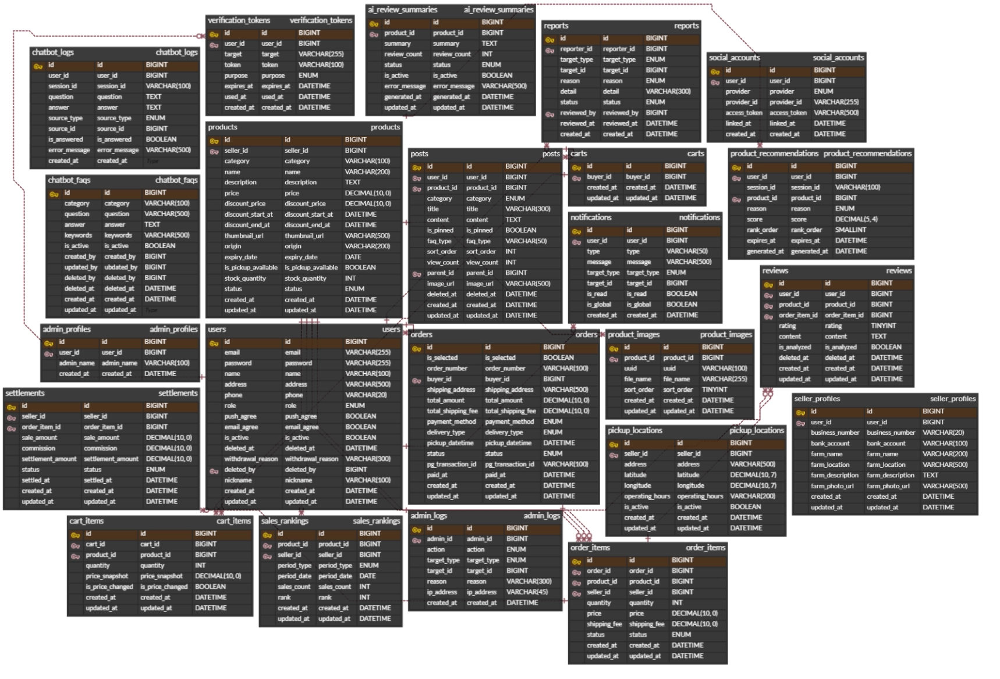

못난이 농작물 마켓플레이스 · 팀장 / 상품 도메인 오너
PotatoChip
상품성이 낮다는 이유로 버려지는 농작물을 판매자와 구매자가 직접 거래하는 서비스입니다. 5인 팀의 팀장으로 상품·재고, 장바구니, 배포를 맡았습니다.
user4@example.com · password
판매자 user3@example.com · password
관리자 user1@example.com · password
PotatoChip 소개 영상 · Claude를 사용하여 영상을 제작하였습니다
프로젝트 소개
못난이 농작물은 맛에 문제가 없는데도 크기나 모양 때문에 유통 과정에서 버려집니다. 농가는 팔 곳이 없고 소비자는 싸게 살 길이 없어, 판매자와 구매자를 직접 잇는 것이 목표였습니다. 대우능력개발원 교육 과정의 팀 프로젝트입니다.
마감임박 할인처럼 판매자가 가격을 내리는 일이 잦은 서비스라, 가격이 언제 확정되는지가 핵심 문제였습니다.
내 역할
팀장으로 협업 방식을 정하면서, 상품·재고와 장바구니를 직접 만들고 배포를 맡았습니다.
- 상품 상품 도메인과 판매자 소유권 검증을 구현하고, 상품 사진에서 제목·설명 초안을 채우는 기능을 개발했습니다.
- 재고·가격 재고 초과 판매를 조건부 UPDATE로 막고, 장바구니·주문·상품 화면이 같은 가격 계산을 쓰도록 통일했습니다.
- 배포 파일 저장을 인터페이스로 분리해 개발 환경은 로컬 디스크, 운영 환경은 S3를 쓰도록 하고, Docker로 EC2에 배포했습니다.
- 팀 리딩 작은 PR과 develop 최신화 규칙으로 충돌을 관리하고, 일정과 담당 기능을 공유 문서로 정리했습니다.
전체 구조
실제 코드가 기능별로 나뉘어 있는 패키지 구조입니다. 색이 들어간 줄이 제가 맡은 부분입니다.
재고보다 많은 주문이 성립하는 문제
재고를 확인한 뒤 차감하는 두 단계 구조라, 주문이 몰리면 여러 요청이 같은 재고를 보고 각자 차감했습니다. 재고 차감 로직만 떼어 2,000건을 동시에 요청하니 1,722건이 초과 판매됐습니다.
재고 차감을 "재고가 있을 때만 빼라"는 조건부 UPDATE 한 번으로 바꾸고, 바뀐 행이 0개면 주문을 취소했습니다. 실제 주문 흐름에서 같은 상품 동시 주문 200건으로 다시 테스트하니 180건이 DB 충돌 오류로 실패해, 주문 메서드의 격리 수준을 READ COMMITTED로 바꿨습니다. 이때 덮어쓰기 위험이 생긴 포인트·쿠폰도 조건부 UPDATE로 바꿨습니다.
초과 판매가 1,722건에서 0건이 됐고, 동시 주문 200건이 모두 성공했습니다.
Trade-off
초과 판매 0건이 전제이고, 그 안에서 재고가 남았는데 거절되는 주문이 없는지와 처리량을 봤습니다. 세 방식은 같은 조건(로컬 MariaDB, 2,000건을 스레드 50개로, 3회 중앙값)에서 비교했습니다.
- 1X낙관적 락 (버전 비교 + 재시도)
초과 판매는 막지만 재시도가 폭증해, 재고가 남았는데도 366건이 실패합니다.
- 2X비관적 락
초과 판매는 없지만 뒤 요청이 잠금을 기다려 192건/초로 느려집니다.
- 3O조건부 UPDATE
확인과 차감이 쿼리 한 번이라 초과 판매 0건, 300건/초로 가장 빠릅니다.
남은 한계
- 같은 상품에 주문이 몰리면 차례를 기다리는 시간은 남습니다.
주문할수록 결제가 느려지는 문제
주문 1건마다 판매 랭킹 전체를 다시 계산했습니다. 팔린 상품이 300개면 주문 1건에 1.2초(쿼리 918개)가 걸렸습니다.
랭킹 계산을 주문 처리에서 빼고, @Scheduled로 이전 계산이 끝난 뒤 1분 간격으로 다시 계산하게 했습니다.
주문 1건 처리 시간이 1,240ms에서 49ms로(쿼리 918개 → 13개), 동시 주문 처리량이 초당 2.3건에서 41.2건으로 늘었습니다.
Trade-off
랭킹은 참고 정보라 조금 늦어도 되지만 주문은 느려지면 안 됩니다. 그래서 주문 처리에서 랭킹 계산을 완전히 떼어낼 수 있는지를 봤습니다.
- 1X주문 시 판매 수 +1
주문 처리에 쓰기가 남고, 기간 지난 판매 빼기와 취소 반영을 따로 만들어야 합니다.
- 2X주문 후 비동기 계산
응답은 빨라지지만 주문마다 전체를 다시 계산하는 부하는 그대로입니다.
- 3O주기적 계산
주문과 완전히 분리되고, 계산은 주문 수와 상관없이 1분에 한 번입니다.
감수한 것
- 랭킹이 최대 1분 남짓 늦게 반영됩니다. 랭킹은 실시간일 필요가 없다고 판단했습니다.
할인이 끝나도 할인가로 팔리는 문제
할인 기간을 확인하지 않아 끝난 할인도 할인가로 팔렸습니다. 장바구니는 담을 때 가격으로 고정돼 있어, 담은 뒤 시작된 할인이 반영되지 않았습니다.
"오늘이 할인 기간인가"를 판단하는 currentPrice() 하나를 만들고, 장바구니·주문·상품 화면이 모두 이 메서드를 쓰도록 바꿨습니다. 가격 정렬 쿼리에도 같은 기간 조건을 넣었고, 서버가 UTC 기준이라 날짜가 최대 9시간 어긋나서 한국 시간 기준으로 고정했습니다.
할인 전·중·후, 종료일 당일, 할인가 미설정 등 가격 계산 규칙을 단위 테스트 7개로 검증했습니다.
Trade-off
가격은 장바구니·주문·상품 화면·정렬에서 모두 쓰이므로 같은 시각엔 어디서 보든 같은 가격이어야 했습니다.
- 1X담을 때 가격 고정
담은 뒤 시작된 할인은 빠지고, 끝난 할인은 그대로 적용됩니다.
- 2X할인 시작·종료일에 가격 변경 예약 작업
작업이 늦거나 실패하면 틀린 가격이 남고, 알아채기도 어렵습니다.
- 3O필요할 때 계산
저장해 둔 가격이 없어 어긋날 일이 없습니다. 대신 조회할 때마다 기간을 비교합니다.
남은 한계
- 정렬 쿼리에도 같은 규칙이 있어서, 규칙을 바꾸면 코드와 쿼리 두 곳을 고쳐야 합니다.
팀 리딩 — 작은 PR 규칙으로 충돌을 푼 경험
팀원들이 각자 작업을 오래 쌓아 두었다가 한 번에 큰 PR로 올리다 보니, 그사이 develop에 반영된 변경과 충돌이 겹겹이 쌓였습니다. 충돌을 푸는 시간이 기능 개발 시간을 넘어서기 시작했고, 누가 어떤 기능을 어디까지 만들었는지도 파악하기 어려웠습니다.
원인이 브랜치 전략이 아니라 PR의 크기와 시점에 있다고 판단했습니다. 기능 단위를 잘게 나눠 작업이 끝나는 즉시 PR을 올리고, 작업 전에는 반드시 develop을 최신화한 뒤 브랜치를 만들도록 규칙을 정했고, 제가 먼저 작은 단위로 PR을 올려 기준을 보여줬습니다.
충돌이 생겨도 PR 하나 크기 안에서 바로 풀 수 있었고, 팀은 기간 안에 기능을 합쳐 배포까지 마쳤습니다. 저장소에 남은 55개 PR 가운데 35개를 제가 머지했습니다.
돌아보며
- 규칙을 정하고 제 몫을 하는 데서 멈췄고, 왜 안 올라오는지 물어보고 막힌 곳을 같이 푸는 일은 거의 못 했습니다. 다시 한다면 PR을 올리라고 말하기 전에 뭐가 막혔는지부터 묻겠습니다.
배포
- 파일 저장을 인터페이스로 분리해 개발 환경은 로컬 디스크, 운영 환경은 S3를 쓰도록 했습니다.
- Docker와 nginx로 AWS EC2에 배포했습니다.
데이터 구조 (ERD)
어떤 정보를 어떤 표에 나눠 담고, 표끼리 어떻게 연결되는지 그린 설계도입니다.

상품 · 이미지 · 장바구니 · 랭킹 엔티티 관계